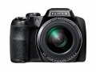

器材
党
全部器材
产品年表
名词百科
榜单
器材库
> 不可换镜头数码相机 > FinePix S9800

富士
FinePix S9800
分类
不可换镜头数码相机
点评
0 条
图片
0 张
评测
0 篇
这是一款具有50倍光学变焦镜头功能的长焦相机，具有包括可用于Full HD视频拍摄的5轴图像防抖系统，以及多种创意滤镜效果等特点。
产品类型
不可换镜头数码相机
综合评分
暂无评分
无忌评测
暂无评测
规格参数
网友点评
(0)
产品图 / 样片
(0)
评测文章
(0)
规格总览
发布日期
2015-01-15
影像规格
影像传感器
BSI-CMOS
影像传感器尺寸
1/2.3英寸
总像素
1679万
有效像素
1620万
静态图像格式
JPEG
静态图像尺寸
L : (4:3) 4608×3456 / (3:2) 4608×3072 / (16:9) 4608×2592 / (1:1) 3456×3456 M : (4:3) 3264×2448 / (3:2) 3264×2176 / (16:9) 3264×1840 / (1:1) 2432×2432 S : (4:3) 2304×1728 / (3:2) 2304×1536 / (16:9) 1920×1080 / (1:1) 1728×1728
画幅比
3:2, 4:3, 16:9, 1:1
短片格式
MOV
短片尺寸
全高清1920?080 60i（最长29分钟） 高清1280 x 720 60p 640 x 480 30p
音频格式
线性PCM立体声
防抖系统
镜片位移式光学防抖
镜头和对焦
镜头结构
17片/12组
非球面镜片
3片
低/超低色散镜片
2片
焦距
4.3mm-215mm
等效35mm画幅焦距
24mm-1200mm
最大光圈
f/2.9-6.5
光学变焦
50倍
数码变焦
2倍
最近对焦距离
广角40cm, 长焦350cm, 微距7cm, 超微距1cm
自动对焦系统
TTL反差式自动对焦
对焦模式
单次自动对焦 / 连续自动对焦
AF辅助灯
有
曝光控制
测光模式
点测光, 平均测光, 多重测光
曝光模式
程序AE、快门优先AE、光圈优先AE、手动曝光
快门速度
（自动模式）1/4秒至1/1700秒，（所有其它模式）8秒至1/1700秒，采用机械快门
曝光补偿
±2EV以1/3EV级调整
自动包围曝光
±1/3EV、±2/3EV、±1EV
ISO感光度
自动/自动(400) / 自动(800) / 自动(1600) / 自动(3200)， 相当于ISO 100 / 200 / 400 / 800 / 1600 / 3200 / 6400 / 12800（标准输出感光度）
白平衡
智能场景识别预置：晴天、阴天、荧光灯（日光）、荧光灯（暖白）、荧光灯（冷白）、白炽灯、自定义
连拍
高：约10幅/秒（最多10幅） 中：约5.0幅/秒（最多10幅） 低：约3.0幅/秒（最多10幅） SH1 : 约60幅/秒（最多60幅，拍摄图像的最大像素数：1080 x 960） SH2 : 约120幅/秒（最多60幅，拍摄图像的最大像素数：640 x 480）
拍摄模式
SP肖像、婴儿、笑脸、风景、运动、夜景、夜景（三脚架）、烟火、日落、雪景、海滩、聚会、花卉、文字 模式转盘场景自动识别、自动、高级模式、SP、全景、P、S、A、M、自定义
创意滤镜
玩具相机/微缩景观/流行色彩/高调/低调/动态色调/柔和对焦/闪耀/鱼眼镜头/局部色彩/素描
闪光灯
内置闪光灯
弹出式
闪光模式
自动, 慢速同步, 强制闪光, 禁止闪光, 减轻红眼慢速同步, 自动+红眼减轻 , 强制闪光+消减红眼
闪光涵盖范围
标准广角：约40cm至7.0m望远：约2.5m至3.6m微距广角：约30cm至3.0m望远：约2.0m至3.0m
取景规格
取景器
电子取景器
取景器尺寸
0.2英寸
取景器像素
约92万
LCD类型
彩色TFT LCD
LCD尺寸
3.0英寸
LCD像素
约46万
视野率
约97%
文件输入/输出
内置存储容量
约38MB
存储卡
SD/SDHC, SDXC
数据接口
USB2.0
视频/音频接口
HDMI Mini 输出
支持打印协议
PictBridge, EXIF Print
电源
电池
4节5号碱性电池（附带） / 4节5号镍氢充电电池（另售） / 4节5号锂离子电池（另售）
续航能力
碱性电池：约300幅（自动模式）镍氢充电电池：约500幅（自动模式）锂离子电池：约700幅（自动模式）
外观
颜色
黑色, 白色
尺寸
122.6×86.9×116.2mm
重量
仅机身约577g / 含电池和存储卡约670g
其它
工作温度
0~40℃
工作湿度
10~80%
附件
4节5号碱性电池，肩背带，USB接线，镜头盖和镜头盖线，CD-ROM光盘，使用说明书
该产品暂无存档的网友点评
该产品暂无存档的产品图
评测 / 相关文章
该产品暂无存档的评测文章
相关文章
［资讯］50倍光学变焦 富士推出FinePix S9800
（原站已下线）